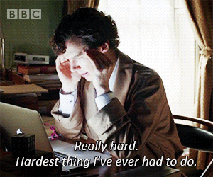

--- count: false class: inverse, middle, center # Statistics --- class: center, middle # Traditional Statistics --- class: center, middle # Counting / Naive Probability <img src="gambling.jpg", width = 600> --- class: center, middle # Probabilistic Modelling <img src="density.png", width = 500> --- class: center, middle # Conditioning and Bayes Theorem <img src="bayesneon.jpg", width = 600> --- class: center, middle # <b>Measures of Centrality</b> <img src="carlin-stupid-people.jpg", width = 600> --- class: center, middle # <b>Limit Theorems</b> <img src="clt.png", height = "300"> --- class: center, middle # Hypothesis Testing <img src="confidence.png", height = "300"> .center[<font size=2>How many people do you need to poll <br> to be 95% certain that Trump is likely to win the election?] --- class: center, middle # Regression and Causation <img src="ols2dnonlinear.png", width = "500"> --- count: false class: inverse, middle, center # Modern statistics (Only if we have the time...) --- class: center, middle # Playing Atari <img src="breakout.png", height = "300"> <br> See [video](https://www.youtube.com/watch?v=V1eYniJ0Rnk&list=PLujxSBD-JXglGL3ERdDOhthD3jTlfudC2) .footnote[<font size=1>https://arxiv.org/pdf/1312.5602.pdf</font>] --- class: center, middle # Playing Go <img src="nature-go.jpg", height = "300"> .center[<font size=1>*"It made me question human creativity. <br> When I saw AlphaGo’s moves, I wondered whether the Go moves I have known were the right ones" - Lee Se-dol* <br>] .footnote[<font size=1>See article: http://web.iitd.ac.in/~sumeet/Silver16.pdf</font>] --- class: center, middle # Making music <img src="magenta.png", height = "300"> .center[See [video](https://www.youtube.com/watch?v=0ZE1bfPtvZo)] <br> .center[<font size=1>Check out themagentaproject.org/</font>] --- class: center, middle # Thinking <img src="growamind.png", height = "300"> .center[<font size=2>Which of these are *tufas*?<br>] .footnote[<font size=1>See [article](http://web.mit.edu/cocosci/Papers/tkgg-science11-reprint.pdf) *How to Grow a Mind*</font>] --- class: center, middle # Describing <img src="describe.png", height = 300> .center[See [article](http://cs.stanford.edu/people/karpathy/cvpr2015.pdf)] .center[See other [demo](http://www.cs.toronto.edu/~nitish/nips2014demo/index.html)] --- class: center, middle # Moving <img src="dynamics.jpg", height = 300> .center[See [video](https://www.youtube.com/watch?v=rVlhMGQgDkY)] --- class: center, middle # There's also a good financial reason... <img src="highest-paying-jobs.png", width = 600> https://www.youtube.com/watch?v=V1eYniJ0Rnk&list=PLujxSBD-JXglGL3ERdDOhthD3jTlfudC2 --- class: center, middle, inverse # Logistics --- class: center, middle # Programming <img src="python-logo.png"> .center[We will be using the *Python* programming language.] --- class: center, middle # Python This semester, our Python classes will be <b>inverted</b>: You study at home, and then do (most of) the homeworks in class. <br><br><br> Every week, I'll tell you which sections of this e-book you should learn: http://openbookproject.net/thinkcs/python/english3e/ You can find interactive exercises here: http://interactivepython.org/courselib/static/thinkcspy/index.html --- class: center, middle # Required Textbook <img src="cartoon-guide.jpg", height = 300> .center[Gonick, L., & Smith, W. (1993). The cartoon guide to statistics. <br> <font size=2>We will complement the explanations with homework exercises. <br> There will also be a large question bank.] --- class: center, middle # Optional Textbook <img src="https://images.tandf.co.uk/common/jackets/amazon/978146657/9781466575578.jpg", height = 300> .center[<font size=3>This book would be extremely useful for the first half of the course, if it weren't so hard. <br> Nevertheless, I'll be stealing a lot of ideas from this book.</font>] --- class: center, middle # Grades Weekly Homeworks: 30% Midterm: 20% Final exam: 30% Discussion sections: 20%[*] [*] These are the "STATA labs" ECON1150 --- class: center, middle # Homework rules You may work in groups of *no more than three students*. <b>Each group submits one homework, with all collaborators' names.</b> No two groups should have identical answers. You don't have to stick to the same group throughout the semester. <br><br><br><br><br><br><br><br> .footnote[<font size=2>Violation of these rules will be considered a **violation of academic integrity**] --- class: center, middle # Course website piazza.com/bc/spring2017/econ1151/home .center[Please post all your questions to the forum] # Office hours (Tentative) Tuesday 5:30-7:30PM (?) <br> Maloney 3F, 340A --- class: center, middle, inverse # Some advice --- class: center # Be prepared <br><bR><br> <img src="compared.png", width = 600> --- class: center # Be prepared  ## .center[This will be a challenging semester] --- class: center # Take your time -- ## .center[Sometimes, you won't understand things right away.] -- #### .center[You're not stupid.] -- ###### .center[I promise.] --- class: center # Work together <img src="dragon.jpg" height = 300> ## You can rely on your friends --- class: center # Don't suffer a mental breakdown <img src="skull.png" height = 300> ## Your health should be first your priority ## I'm here if you need to talk --- class: center, middle, inverse # Our fundamental rule --- class: center, middle # Don't be this guy. <img src="learn-statistics-day.png", height = 400>